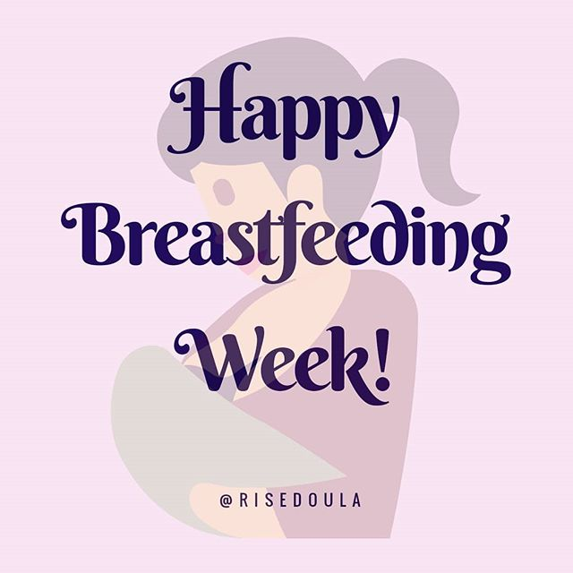
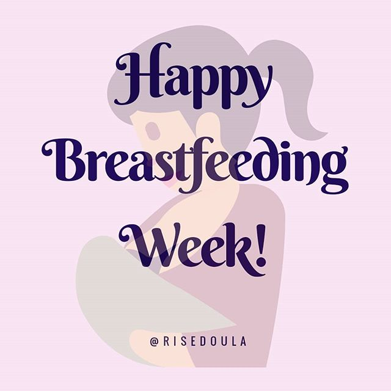
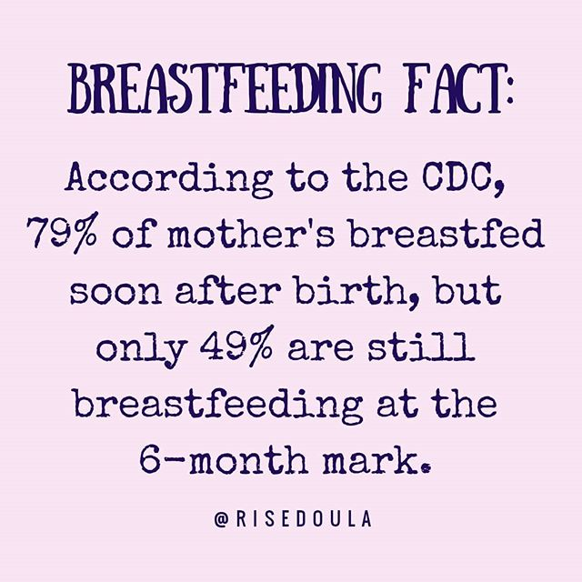
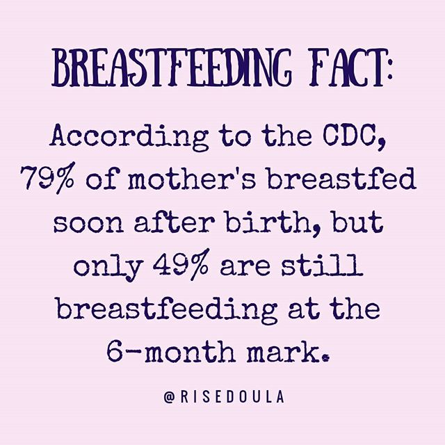

 

Let's begin with an introduction, shall we? Hi, I'm Jessica. I have two beautiful children, a spunky and wild 2-year-old boy, and a calm and cheerful 8-month-old little girl. When I'm not being a doula, I love involving my children in my other passions: hiking, sewing, healthy cooking, and environmentalism.
I had doulas at both of my birth's and each one shaped my births into a beautiful and euphoric experience. With my son, I trained in hypnobabies, practiced my breathing, and had an amazing 7-hour birth-center birth. With my daughter, I focused on being present and incorporating movement into my pregnancy and birth. Her birth was a magical 4-hour experience that greatly impacted my views on womanhood and birth.
Having doulas at both of my births made me realize how much strength and encouragement a laboring mother can draw from her birth support team (including doulas). I appreciated how calm and collected my husband was able to feel, knowing he could focus on my emotional needs while my doulas could be my additional supports. I fell in love with the idea of helping other women have wonderful, empowering, and euphoric births. I look forward to meeting with you and seeing how I can best fit your individual needs!
I will support you during your pregnancy, labor, and in the postpartum period in whatever choices you make.
I will provide information to enable you to make informed choices.
I will remain up to date on current research into birth-related issues.
I believe that birth is a normal physiological process and an important journey in a mother and father's life.
I will maintain complete confidentiality of all details relating to your pregnancy and birth.
I will strive to support you during labor to ensure a positive birth experience and to help you to achieve the type of birth you would like.
As I am independent and self-employed, I will be working for you, not your care provider or hospital.
I do not perform clinical tasks such as blood pressure, vaginal checks, or fetal heart rate monitoring. I do provide physical, emotional, and educational support.
I will draw on my knowledge and experience to provide emotional support, physical comfort, and assist you with communication with the medical staff to make sure you have the information you need to make informed decisions during labor. I will not speak to the staff on your behalf but will discuss your concerns with you and suggest options. However, you or your partner will ultimately speak on your behalf to the medical staff.
I can provide reassurance and perspective to you, make suggestions to help labor progress, and help with relaxation, massage, positioning, and other techniques for comfort.
I will be available by phone or text message anytime after the contract is signed, for questions, concerns or advice. Monday-Friday between the hours of 9am-6pm
I will be on call for you 24 hours a day beginning three (3) weeks before your estimated due date (EDD) up until labor begins. This means that I will carry my phone with me at all times, and will not leave town without advising you unless it is an emergency or an event not known about at the time of this contract signing.
I will take responsibility as your primary doula. I am the person that you first contact when you are in labor. If for any reason you are unable to contact me, or due to an emergency I cannot be with you, please contact your assigned backup doula. I will provide contact details to you.
Once you have requested me to act as your doula, I will arrange 2 prenatal visits. During these visits I can discuss any questions you might have, sign our contract, and go over exactly what you expect from me as your doula. I will discuss birth plan options, your personal information, when you will call me in labor, etc. Additional visits to cover childbirth education including physiology of labor, further breathing & relaxation, breastfeeding and prenatal and postnatal exercises are available.
The presence of a doula lifts the sole responsibility of the labor off the shoulders of your partner, allowing him to enjoy the whole birth process. I can help your partner to feel calm and informed, giving him ideas to continue support from beginning to end. At no time will I "take over" or deliberately exclude your partner. I am there to provide support to both of you at all times. Sometimes a partner likes to stay by the mother's side during labor, while others prefer to take a break. This is your birth experience and it is important that you feel free to decide on what you want at the time.
I will provide birth plan consultation.
I will answer questions and make suggestions over the phone any time before labor begins.
I will provide early labor support as requested, including in your home.
I will remain with you once active labor has begun until one to two hours after your baby is born. I may take short breaks for meals and rest if time allows -- this will be discussed with you at the time and I will not leave you if it is inappropriate.
I may utilize non-medical support techniques for labor and birth.
I will strive to maintain a calm and peaceful birth environment.
I will assist in providing information and supply emotional support by telephone on postpartum care, breastfeeding, and newborn care after the birth, as requested.
Please contact me if you have any concerns. If I cannot help, I will be able to find the an appropriate person who can. I will help to initiate the breastfeeding process if that is what you choose to do. If you wish to bottle feed your baby, I will help you with the first feeding.
Within the first 7 days after the birth of your baby, I will visit you at home or in the hospital.
I will answer any questions or give you a referral to the appropriate professional that can meet your needs. Follow-up visits can then be arranged if desired.
You will complete a birth plan and discuss this with your caregiver.
If allowed you will tour your birth facility.
You will call me when you think you may be in labor, even if you are not sure, so that I may make arrangements to attend your birth.
You will allow me approximately one hour to reach you---this may change depending on distance.
A deposit of $250 will be due within 7 days of signing this contract. The remaining balance will be due three weeks before your EDD.
If you decide not to employ me as your doula after signing this contract, the following will apply: ○ Cancellation more than 4 weeks before your due date -- 50% refund ○ Cancellation between 4 weeks and 2 weeks before your due date -- 25% refund ○ Cancellation less than 2 weeks before your due date -- no refund ○ Cancellation of prenatal/postpartum visits only -- no refund
If you would like additional prenatal or postnatal visits, these are available as required.
For additional visits, the cost for these is $50 per hour for visits made between 9 am and 6 pm on weekdays. For visits outside of these times, or on weekends or public holidays, the cost is $85 per hour. These visits are invoiced separately.
I will make every effort to provide the services described here.
In the case of a rapid birth or medical emergency, it may be impossible for me to provide these services.
If you contact me to advise that you are in labor in good time, but I do not attend your birth due to an error on my part, I will refund the total amount paid less the cost of any prenatal care already provided. If you are unable to contact me you are required to attempt to contact your backup doula, if one has been assigned, and leave a message for the primary doula.
If you fail to call me to advise that you are in labor, for whatever reason, you will not be due to a refund of amounts paid. If there is a remaining balance outstanding, this will be due.
In some circumstances, labor progresses more quickly than anticipated. If you call me to advise that your labor has progressed very quickly and delivery is imminent or your baby has been born unexpectedly at home, I will call an ambulance from the hospital you were planning to deliver at and arrange for you to be transferred to that hospital.
If your baby arrives unexpectedly at home with me present, you or your partner will be responsible for the delivery of your baby. After the birth, I can help you arrange transport by ambulance to the hospital. I am not responsible for delivering your baby or performing any clinical skills related to the delivery of your baby. In signing this contract, you agree that I have discussed all the points herein and you understand and agree with them.